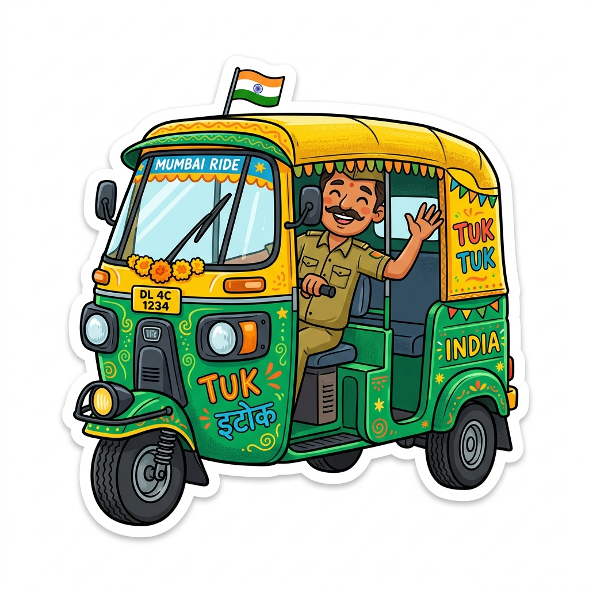

YOUR JAIPUR TRIP
Build your day as you go
Choose places in Explore and they will appear here in your trip order.
0stops saved

Made for your paceAccess notes • Family stops • Local picks
How Safarnama generates 94% explainable match recommendations instead of generic star ratings.
Interests, group dynamic (solo, couple, family), accessibility needs & cultural curiosities.
UNESCO monuments, secret stepwells, living artisan workshops & heritage culinary trails.
Optimal sun angle, visiting duration, opening hours & logical East-to-West corridor routing.
Midday UV heat index, rain probability, lighting levels & real-time footfall density.
Active capacity monitoring, festival surge modeling & proactive redistribution to opportunity zones.
Live capacity telemetry, weather intelligence, and curated heritage circuits.
Save travel time and avoid overcrowding while experiencing world-class architecture.
Dense pedestrian traffic and bus queues between 11 AM – 4 PM.
Pristine white marble royal cenotaphs, peaceful shaded gardens, 4.2 km away.
Peak congestion at elephant ramp and palace ticket turnstiles.
16th-century geometric stepwell with optical illusion stairs, 400m from fort.